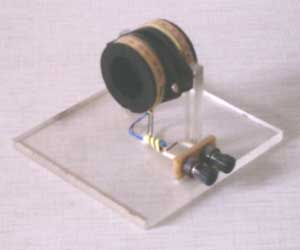
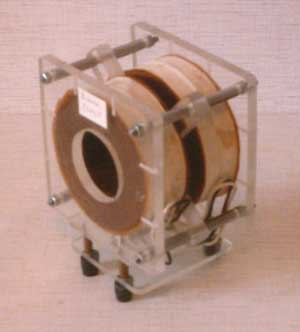
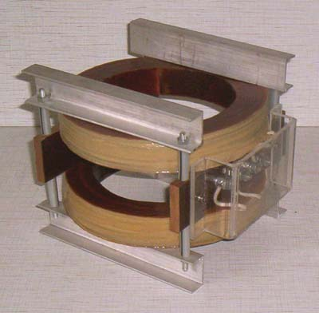
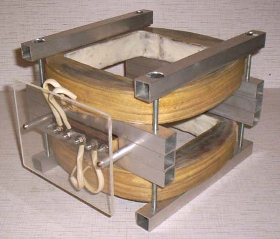
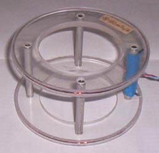
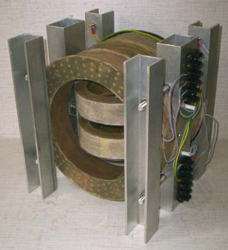

Системы колец Гельмгольца
(катушки Гельмгольца)
Катушки Гельмгольца используются для получения практически
однородного магнитного поля. В идеальном случае они представляют собой два
одинаковых кольцевых витка, соединенных между собой последовательно и
расположенных на расстоянии радиуса витка друг от друга. Обычно катушки
Гельмгольца состоят из двух катушек, на которых намотано некоторое количество
витков, причем толщина катушки должна быть много меньше ее радиуса. В реальных
системах толщина катушек может быть сравнима с их радиусом. Таким образом, можно
считать системой колец Гельмгольца две соосно расположенных одинаковых катушки,
расстояние между центрами которых приблизительно равно их среднему радиусу. В
центре системы имеется зона однородного магнитного поля, что может быть
использовано для измерительных целей, для калибровки датчиков магнитной индукции
и т. д.
Изготовлены, испытаны и используются в повседневной работе
системы колец и катушек Гельмгольца различных типоразмеров.
1. Система катушек Гельмгольца с проходным отверстием
диаметром 40 мм и расстоянием между катушками 7 мм

Назначение
Система катушек Гельмгольца предназначена для получения
постоянного или переменного магнитного поля с зоной однородности и может быть
использована для калибровки датчиков магнитной индукции [12, 16], изучения
магнитных свойств веществ, размагничивания мелких стальных деталей и инструмента
[15].
Технические данные:
- коэффициент преобразования около 25 мТл/А (в центре
системы)
- суммарное сопротивление при последовательном включении
катушек около 40 Ом
- индуктивность при последовательном включении катушек
около 100 мГн
- максимальный непрерывный ток 0.5 А
- максимальный ток при повторно-кратковременном режиме
работы до 1 А
- диаметр проходного отверстия 40 мм
- расстояние между катушками 7 мм
- габаритные размеры не более 170 х 170 х 120 мм3
- масса не более 1 кг
2. Система катушек Гельмгольца с проходным отверстием
диаметром 60 мм и расстоянием между катушками 15 мм

Назначение
Система катушек Гельмгольца предназначена для получения
постоянного, переменного или импульсного магнитного поля с зоной однородности и
может быть использована для калибровки датчиков магнитной индукции [12, 16],
намагничивания и размагничивания постоянных магнитов [14],
размагничивания стальных заготовок, деталей и инструмента
[15], построения установок магнитно-порошковой дефектоскопии.
Технические данные:
- коэффициент преобразования около 10 мТл/А (в центре
системы)
- суммарное сопротивление при последовательном включении
катушек около 4 Ом
- индуктивность при последовательном включении катушек
около 50 мГн
- максимальный непрерывный ток 5 А
- максимальный ток при повторно-кратковременном режиме
работы до 15 А
- максимальная амплитуда тока при длительности импульса до
30 мс 150 А
- диаметр проходного отверстия 60 мм
- расстояние между катушками 15 мм
- габаритные размеры не более 200 х 150 х 120 мм3
- масса не более 4 кг
3. Система катушек Гельмгольца с проходным отверстием
диаметром 150 мм и расстоянием между катушками 50 мм

Назначение
Система катушек Гельмгольца предназначена для получения
постоянного, переменного или импульсного магнитного поля с зоной однородности и
может быть использована для калибровки датчиков магнитной индукции [12, 16],
намагничивания и размагничивания постоянных магнитов [14],
размагничивания стальных заготовок, деталей и инструмента
[15], построения установок магнитно-порошковой дефектоскопии.
Технические данные:
- коэффициент преобразования около 3.5 мТл/А (в центре
системы)
- суммарное сопротивление при последовательном включении
катушек около 3.5 Ом
- индуктивность при последовательном включении катушек
около 50 мГн
- максимальный непрерывный ток 7.5 А
- максимальный ток при повторно-кратковременном режиме
работы до 25 А
- максимальная амплитуда тока при длительности импульса до
30 мс 250 А
- диаметр проходного отверстия 150 мм
- расстояние между катушками 50 мм
- габаритные размеры не более 220 х 230 х 190 мм3
- масса не более 8 кг
4. Система катушек Гельмгольца с квадратным проходным
отверстием размером 150 х 150 мм2 и расстоянием между катушками от 20
до 60 мм

Назначение
Система катушек Гельмгольца предназначена для получения
постоянного, переменного или импульсного магнитного поля с зоной однородности и
может быть использована для калибровки датчиков магнитной индукции [12, 16],
намагничивания и размагничивания постоянных магнитов [14],
размагничивания стальных заготовок, деталей и инструмента
[15], построения установок магнитно-порошковой дефектоскопии. Расстояние
между катушками можно изменять в диапазоне от 20 до 60 мм с шагом 20 мм за счет
добавления или удаления немагнитных прокладок высотой 20 мм каждая.
Технические данные:
- коэффициент преобразования в центре системы при
расстоянии между катушками: 20 мм - 3.4 мТл/А, 40 мм - 3.1 мТл/А, 60 мм -
2.8 мТл/А
- суммарное сопротивление при последовательном включении
катушек около 3.5 Ом
- индуктивность при последовательном включении катушек
около 60 мГн
- максимальный непрерывный ток 7.5 А
- максимальный ток при повторно-кратковременном режиме
работы до 25 А
- максимальная амплитуда тока при длительности импульса до
30 мс 250 А
- проходное отверстие квадратной формы размером 150 х 150
мм2
- расстояние между катушками 20, 40 или 60 мм
- габаритные размеры не более 230 х 270 х 180 мм3
- масса не более 10 кг
5. Система колец Гельмгольца с проходным отверстием
диаметром 60 мм и расстоянием между кольцами 45 мм

Назначение
Система колец Гельмгольца предназначена для получения
постоянного или переменного магнитного поля с зоной однородности и может быть
использована для калибровки датчиков магнитной индукции слабых магнитных полей,
сравнимых с магнитным полем Земли [12, 16]. Система может также использоваться
как образцовый источник слабого магнитного поля, коэффициент преобразования
которого по току достаточно точно рассчитывается по геометрическим размерам
системы с использованием формул для аксиальной компоненты магнитной индукции на
оси кругового витка с током [7].
Технические данные:
- коэффициент преобразования 180 мкТл/А (в центре системы)
- суммарное сопротивление при последовательном включении
катушек около 1 Ом
- индуктивность при последовательном включении катушек
около 50 мкГн
- максимальный непрерывный ток 0.5 А
- максимальный ток при повторно-кратковременном режиме
работы до 1 А
- диаметр проходного отверстия 60 мм
- расстояние между катушками 45 мм
- габаритные размеры не более: диаметр 104 мм, высота 55 мм
- масса не более 0.1 кг
6. Двойная система взаимно ортогональных катушек
Гельмгольца с проходными отверстиями размером 25 х 110 мм2 и 60 х 110
мм2

Назначение
Двойная система катушек Гельмгольца предназначена для
получения постоянного, переменного или импульсного магнитного поля с общей зоной
однородности и предназначена для настройки и калибровки взаимно ортогональных
датчиков магнитной индукции [12, 16] без их поворота, а также измерения
кросс-эффекта. Может использоваться для генерации магнитных полей со сложным
изменением пространственно-временных компонент.
Технические данные:
- коэффициент преобразования в центре системы малых катушек
4.9 мТл/А, в центре системы больших катушек 4.75 мТл/А
- суммарное активное сопротивление системы малых катушек
при последовательном включении около 3.8 Ом, системы больших катушек - около
6.6 Ом
- индуктивность системы малых катушек при последовательном
включении около 44 мГн, системы больших катушек - около 194 мГн
- максимальный непрерывный ток (при использовании
принудительного воздушного охлаждения) для системы малых катушек 4 А, для
системы больших катушек 5 А
- максимальный ток при повторно-кратковременном режиме
работы до 20 А для системы малых катушек и до 25 А для системы больших
катушек
- проходное отверстие в общую зону однородности с боковой
стороны малых катушек 25 х 110 мм2, с боковой стороны больших
катушек 60 х 110 мм2
- габаритные размеры не более 240 х 260 х 300 мм3
- масса не более 25 кг
Для питания систем колец Гельмгольца могут применяться
различные блоки питания [3, 8, 9], генераторы мощных импульсов тока [4 - 6],
регуляторы мощности [11].
Для получения переменных магнитных полей с
изменяющейся частотой может быть использован звуковой генератор, например,
Г3-118 с усилителем [13].
Расчет катушек системы колец Гельмгольца на постоянном токе
можно сделать с помощью программы Coil [1] с использованием подходящей методики
расчета систем соленоидов [10]. С помощью программы H_Coils [2] выполняется
расчет системы колец Гельмгольца на постоянном и переменном токе.
Ссылки:
- Coil: Программа для
расчета параметров и магнитного поля цилиндрического соленоида
- H_Coils: Программа
для расчета параметров и магнитного поля системы колец Гельмгольца
- Блок питания электромагнита
регулируемый
- Генератор мощных
импульсов тока биполярный
- Генератор мощных
импульсов тока однополярный
- Генератор мощных импульсов
тока (емкостной накопитель энергии)
- Законы и уравнения
магнитного поля
- Импульсный
регулируемый блок питания 0 ... -50 В с максимальным выходным током до 20 А
и двухканальным внешним управлением
- Источник питания
повышенной мощности напряжением 12.6 В (замена аккумуляторной батареи)
- Методика расчета
индуктивности системы из двух соосных цилиндрических соленоидов
- Однофазный
тринисторный регулятор мощности в активно-индуктивной нагрузке
- Приборы для
измерения магнитных полей
- Усилитель
мощности низкой частоты для генератора сигналов Г3-118
- Установки
импульсного намагничивания и размагничивания постоянных магнитов
- Установки и
устройства для размагничивания стали
- Феррозондовый
магнитометр с кольцевым сердечником из магнитомягкого феррита
Словарь
терминов:
- Генератор импульсов - прибор или устройство для
создания последовательности импульсов.
- Катушки Гельмгольца
- система из двух одинаковых последовательно включенных цилиндрических
соленоидов, расположенных соосно, причем расстояние между центрами
соленоидов приблизительно равно их среднему радиусу. В центре системы
имеется зона однородного магнитного поля.
- Кольца Гельмгольца
- система из двух одинаковых кольцевых витков с током, расположенных
соосно на расстоянии радиуса витка друг от друга и соединенных между собой
последовательно. В центре системы имеется зона однородного магнитного поля.
- Магнитная индукция - вектор, численно
равный пределу отношения силы, действующей со стороны магнитного поля на
элемент проводника с электрическим током, к произведению тока и длины
элемента проводника, если длина этого элемента стремится к нулю, а элемент
так расположен в поле, что этот предел имеет наибольшее значение, и
направленный перпендикулярно к направлению элемента проводника и к
направлению силы, действующей на этот элемент со стороны магнитного поля,
причем из его конца вращение по кратчайшему расстоянию от направления силы к
направлению тока в элементе проводника должно быть видно происходящим против
часовой стрелки.
- Магнитно-порошковая дефектоскопия -
способ выявления дефектов ферромагнитных изделий, включающий процедуры их
предварительного намагничивания, нанесения на поверхность магнитного порошка
и визуального анализа его распределения по поверхности изделия.
- Однородное магнитное поле - магнитное
поле, в каждой точке которого вектор магнитной индукции имеет одни и те же
направление и величину.
16.03.2004
12.09.2005
22.04.2007
11.05.2007
13.10.2008
19.01.2010
20.03.2013
03.06.2025
Альтернативные источники
энергии
Компьютеры и
Интернет
Магнитные поля
Механотронные системы
Перспективные
разработки
Электроника и
технология
Главная страница